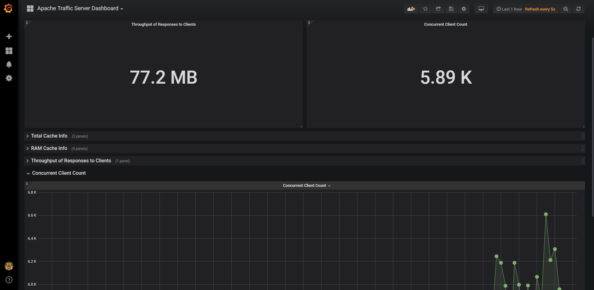

Exporter介绍
在 Prometheus 中负责数据汇报的程序统一叫做 Exporter, 而不同的 Exporter 负责不同的业务。 它们具有统一命名格式，即 xx_exporter，例如负责主机信息收集的 node_exporter。
由于在公司业务中使用的 Apache Traffic server 服务，没有开源的 exporter 服务，所以我要自己写一个 exporter 来监控服务状态。
Exporter格式类型
注释
文本内容，如果以 # 开头通常表示注释。- 以 # HELP 开头表示 metric 帮助说明。
- 以 # TYPE 开头表示定义 metric 类型，包含 counter, gauge, histogram, summary, 和 untyped 类型。
- 其他表示一般注释，供阅读使用，将被 Prometheus 忽略。
采样数据格式
1
2
3metric_name [
"{" label_name "=" `"` label_value `"` { "," label_name "=" `"` label_value `"` } [ "," ] "}"
] value [ timestamp ]Exporter数据类型
Prometheus 时序数据分为 Counter, Gauge, Histogram, Summary 四种类型。- Counter
Counter 表示收集的数据是按照某个趋势（增加／减少）一直变化的，我们往往用它记录服务请求总量、错误总数等。 - Gauge
Gauge 表示搜集的数据是一个瞬时的值，与时间没有关系，可以任意变高变低，往往可以用来记录内存使用率、磁盘使用率等。 - Histogram
Histogram 由_bucket{le=” “}， _bucket{le=”+Inf”}, _sum， _count 组成，主要用于表示一段时间范围内对数据进行采样（通常是请求持续时间或响应大小），并能够对其指定区间以及总数进行统计，通常它采集的数据展示为直方图。 - Summary
Summary 和 Histogram 类似，由{quantile=”<φ>”}， _sum， _count 组成，主要用于表示一段时间内数据采样结果（通常是请求持续时间或响应大小），它直接存储了 quantile 数据，而不是根据统计区间计算出来的。 注意
Histogram 与 Summary - 采样数据的总和应表示为 x_sum。
- 采样数据的总量应表示为 x_count。
- summary 类型的采样数据的 quantile 应表示为 x{quantile=”y”}。
- histogram 类型的采样分区统计数据将表示为 x_bucket{le=”y”}。
- histogram 类型的采样必须包含 x_bucket{le=”+Inf”}, 它的值等于 x_count 的值。
- summary 和 historam 中 quantile 和 le 必需按从小到大顺序排列。
- 两者都包含
_sum， _count - Histogram 需要通过
_bucket 计算 quantile, 而 Summary 直接存储了quantile 的值。
- Counter
Golang Sample_exporter 样例
官方样例
1
2
3
4
5
6
7
8
9
10
11
12
13
14
15
16
17package main
import (
"flag"
"log"
"net/http"
"github.com/prometheus/client_golang/prometheus/promhttp"
)
var addr = flag.String("listen-address", ":8080", "The address to listen on for HTTP requests.")
func main() {
flag.Parse()
http.Handle("/metrics", promhttp.Handler())
log.Fatal(http.ListenAndServe(*addr, nil))
}这是官方给出了样例，提供了一个http服务，访问路径是 “/metrics”。
这个样例没有监控任何东西，默认的只是监控的本机了 Golang 运行环境。
Traffic_exporter 编写
公司使用的 Apache Traffic Server 服务插件中提供了一个状态查询地址，返回内容为 json 格式。我只需要请求这个地址获取状态信息，再使用 Prometheus 官方提供的 client_golang 包把数据格式化对外提供。
完整的代码地址：https://github.com/kzeeyang/exporter-study/blob/master/traffic_exporter/exporter.go
Grafana 监控ATS服务
Grafana 官方的 ATS 模板中监控字段与自己定义的并不匹配，需要自己修改监控字段。
